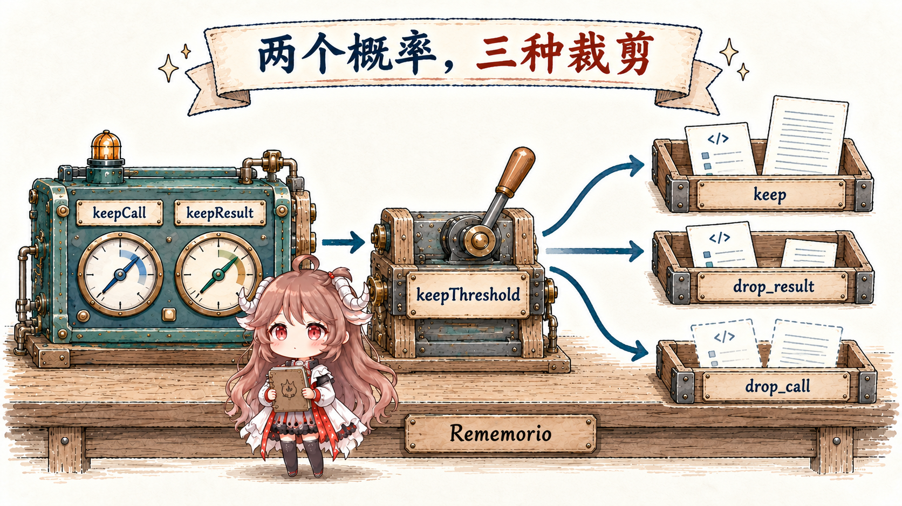

一个结算页面偶尔超时，刷新后可以成功，订单服务也没有发现重复订单。故障记录已经收齐，程序接下来有几件事要决定：这份记录是否包含复现步骤？该交给前端、后端，还是继续收集材料？影响属于哪个等级？三个问题都需要读懂文字，各自的答案范围却很清楚。
Jev 是 TypeSafe 提供的判断模型，把这种小判断做成了可调用的接口：应用提供材料和问题，模型返回带类型的答案与概率，代码据此选择动作。理解这套分工以后，就能读懂 fast-jev-compaction 的尝试：面对越积越长的 Agent 历史，让 Jev 判断哪些工具调用仍值得保留，再由程序裁剪历史。
阅读路线：先用同一份故障记录解释 Noul、Choice 与 Score，再算清概率、confidence 和阈值；随后跟着一条工具调用走完状态构造、批量判断、历史重建与回退。最后回答一个工程问题：怎样确认省下的上下文值得付出信息丢失的代价？
接口定义按 2026 年 10 月 23 日的 TypeSafe 官方文档核对；插件行为以文中固定链接的公开源码为准。故障记录、数值样例和评估方案为教学设计，概率示例没有调用在线模型。模型训练部分只采用官方公布的目标与接口说明。
一、先把要判断的事情拆清楚
1.1 一份材料，可以回答多个小问题
把这条故障记录展开，程序需要保留发生了什么、已有证据和仍然缺少什么。我们用下面这份材料贯穿前三节：
问题：移动端结算页面偶尔超时。
复现：打开购物车，点击结算，约十次中有一次等待超时。
绕行：刷新后重试可以完成。
已查：订单服务没有发现重复订单。
待查：尚未取得发生超时时的前后端关联日志。这些材料组成请求中的 state；应用可以把它写成字符串、对象或数组。questions 则描述对这份材料要作出的判断。把事实与问题分开，有两个实际好处：同一份材料可以回答多种问题，修改判断标准时也能继续用原样本比较结果。
每个问题都有应用指定的 ID，响应再按这个 ID 返回答案。官方文档说明，问题 ID 用于请求与响应配对，模型不读取它；判断依据要写进 instructions。例如只把 ID 命名为 has_reproduction_steps，却把问题写成“检查一下”，就遗漏了真正需要模型判断的条件。
1.2 Noul：这个命题有多大可能为真
先问最小的问题：“这份报告是否给出了可以照着操作的复现步骤？”Noul 是 Jev 对这类“是／否”问题的类型名称。它返回一个数 p，表示模型认为答案为“是”的概率，范围为 0 到 1。若示意答案为 0.92，那么“否”的概率就是 0.08；两者合起来覆盖这个二元问题。
{
"type": "noul",
"instructions": "报告是否给出了可以照着操作的复现步骤？",
"criteria": {
"true": "提供了触发问题的具体操作顺序。",
"false": "只描述症状，没有具体操作顺序。"
}
}criteria 在 Noul 中可选，这里用它明确“复现步骤”的标准。记录里的“十次中有一次”是故障发生频率；返回的 0.92 则是模型对“报告包含步骤”的判断。两种数值描述不同的对象。需要故障发生率时，应统计执行结果；需要判断文字是否给出了操作顺序时，才使用这个问题。
读这个数时，要同时看方向和确定程度：0.92 明显偏向“是”，0.08 明显偏向“否”，0.5 则让两种答案接近均分。越接近任一端，判断越集中。应用可以把中间区间送去补查，也可以因误判代价不同而选择单侧阈值。Noul 响应只需要 noul 这一个数，没有单独的 confidence 字段。
1.3 Choice：把概率分配给明确的候选项
接着判断该把故障交给谁。前端、后端和继续排查是三个没有高低顺序的选项，适合 Choice。应用在 criteria 中提供候选名称及说明，模型返回概率最大的选项，以及完整分布。
{
"type": "choice",
"instructions": "按已有证据判断下一步由谁调查。",
"criteria": {
"frontend": "已有证据把问题定位到客户端。",
"backend": "已有证据把问题定位到服务端。",
"investigate": "现有证据还不足以定位，需要补查。"
}
}假设响应分布为 frontend: 0.15、backend: 0.10、investigate: 0.75，三项概率相加为 1，choice 为概率最大的 investigate。这是一次单选分类；程序可以根据这个标签安排采集关联日志。显式提供“继续排查”，给材料不足的输入留出了合理位置；只列前后端两项，就要求模型把所有概率分配给这两个候选。
候选名称与说明共同定义答案空间。修改一个类别的含义，或者加入新类别，都会改变这次判断的任务。分类结果与规则版本应一起记录，方便以后解释为何同一条报告走向了不同处理人。
1.4 Score：沿一组有序等级表达判断
最后判断影响程度。我们把等级定义为：外观问题、功能受损但可以绕行、核心功能阻塞且没有绕行。Score 用有序的 criteria 数组定义这些等级，编号从 0 开始。模型为每个等级给出概率，score 是等级编号的加权平均。
{
"type": "score",
"instructions": "报告描述的功能影响属于什么程度？",
"criteria": [
"外观问题，功能可正常使用。",
"功能受损，但存在可用的绕行方法。",
"核心功能阻塞，且没有可用的绕行方法。"
]
}若三个等级的示意概率为 (0, 0.8, 0.2)，则 score = 0×0 + 1×0.8 + 2×0.2 = 1.2。这组等级的分数范围为 0 到 2，1.2 是按概率算出的均值。若应用需要一个等级标签，可以按最大概率选等级 1；若关心核心功能阻塞的可能性，可以直接读取等级 2 的概率 0.2。等级之间的数字间隔由数组位置确定；需要按金额、停机分钟数定损时，应使用对应事实和计算规则。
等级应沿同一维度排列。“影响大、容易修、客户着急”涉及三个维度，适合分别提问，再由应用定义排序。一个清楚的等级表，能让低分、高分与后续动作都具有可解释的含义。
回到同一份报告，三个问题分别产生下面的答案。应用按所需判断选择类型；这些类型可以单独使用，也可以像本例一样一起提问。
| 问题类型 | 本例的答案空间 | 示意结果怎样读 |
|---|---|---|
| Noul | 包含复现步骤：是／否 | 0.92 是“是”的概率；“否”为 0.08 |
| Choice | 前端／后端／继续排查，选一个 | investigate 概率最大，为 0.75 |
| Score | 影响等级 0、1、2，有顺序 | 分布 (0, 0.8, 0.2) 的均值为 1.2 |
二、概率、分数与 confidence 怎样读
上面的概率描述模型对各个答案的判断。Choice 和 Score 还会返回 confidence，通常译作“置信度”：TypeSafe 用固定公式把同一份概率分布概括成一个 0 到 1 的数。读它时，要看判断在候选项或等级上有多集中。实际回答是否正确，则要把预测与核对结果比较；下面先算输出，再讨论怎样检验。
2.1 Choice 的 confidence 可以从分布重算
Choice 的 probabilities 保留每个选项的可能性，choice 选出其中最大者。官方 confidence 公式把两个端点定为：各选项概率相等时为 0，全部概率集中在一个选项时为 1。公式衡量最大概率处于这两个端点之间的哪个位置：
n = 选项数，p_max = 最大概率
confidence = (p_max - 1/n) / (1 - 1/n)
三个选项，最大概率 0.75：
confidence = (0.75 - 1/3) / (1 - 1/3) = 0.625这给出了三个可独立检查的值：选项为 investigate，其概率为 0.75，confidence 为 0.625。后者由已有分布计算。两个选项中最大概率同为 0.75 时，公式得到 0.5；因此增加候选项以后，应重新检查应用阈值。
公式只使用最大概率和选项数。例如 (0.6, 0.3, 0.1) 与 (0.6, 0.2, 0.2) 的 confidence 都是 0.4。若业务关心第一名与第二名之间的差距，保留完整分布就可以另算差值。采用哪一个统计量，取决于程序要防止什么错误。
2.2 Score 还要保留“概率落在哪里”
看两个由等级 0、1、2 组成的假设分布：A 为 (0, 1, 0)，B 为 (0.5, 0, 0.5)。两者的平均分都是 1。A 的判断全部集中在中等影响；B 则在两端分配概率。若程序只保存平均分，就丢掉了这项区别。
Score 的 confidence会考虑概率与最可能等级之间的距离。距离越远，惩罚越大。按官方公式，上图 A 的 confidence 为 1，B 为 0。前面故障示例的 (0, 0.8, 0.2) 得到 score = 1.2、confidence = 0.7。
展开计算：Score 怎样把分布压成 confidence
n = 等级数；i = 等级编号；p_i = 等级概率
m = 最可能等级
D = Σ p_i × |i - m|
U = (1/n) × Σ |i - (n - 1)/2|
confidence = max(0, 1 - D/U)
三等级分布 (0, 0.8, 0.2)：
m = 1，D = 0.2，U = 2/3
confidence = 1 - 0.2/(2/3) = 0.7这里的 D 衡量围绕最可能等级的平均距离，U 提供均匀分布的距离尺度。对于特定动作，应用也可以直接读取高影响等级的概率。例如是否立即升级故障，可以单独检查等级 2，而把完整分布留给后续审计。
2.3 校准要用实际结果检验
如果材料遗漏了关键日志，模型也可能把概率集中到一个后来被证实错误的类别上。因此，confidence 可以从一次响应重算，正确率与概率校准则需要一批有核对结果的样本。
如果收集足够多“包含复现步骤”的预测，把概率接近 0.8 的报告分成一组，再由独立标注核对，约八成确实包含步骤，这组预测才体现了校准。概率校准研究关注预测概率与真实频率的对应关系。分组时还应记录样本量：十条样本里的八条，和一千条里的八百条，具有不同的统计稳定性。
TypeSafe 将自己的训练目标称为 RLCD，即针对校准决策进行强化学习。工程接入可以直接核对的部分包括问题类型、返回分布和派生公式；在具体业务里，还需要用自己的语言、材料长度和任务分布测量误判。官方 State 文档也提示，模型主要以英语训练，其他语言的准确率需要单独关注。中文任务应进入评估样本。
2.4 阈值表达应用愿意承担的代价
继续用故障报告：程序准备把有步骤的报告交给复现流程，设 p 为“报告包含复现步骤”的 Noul 概率。为了说明阈值如何产生，做一个简化决策模型：把缺步骤的报告送去执行，浪费的排查成本为 C_extra；把已有步骤的报告搁置，造成的延迟成本为 C_loss；正确处理的成本记为零。立即安排的期望损失为 (1−p)×C_extra，暂缓的期望损失为 p×C_loss。选择期望损失较小的动作，就得到下面的条件。
立即安排复现的条件：
p ≥ C_extra / (C_extra + C_loss)
教学假设：无效排查成本 1，错误暂缓成本 19
安排复现的阈值 = 1 / 20 = 0.05这个算例说明，损失不对称时，合理阈值可以远离 0.5。这里直接比较的是 Noul 概率；问题措辞、预测校准与错误代价都会影响规则是否合适。实际系统还需要考虑排查容量和等待时间，再用独立样本检验所选阈值。
三、把多个判断放进一次调用
3.1 state、questions、answers 构成一次往返
故障分流的调用可以按四步执行：整理报告；分别提出复现、负责人和影响等级三个问题；接收三个答案；由代码安排补查或分派。下面是保留实际字段的教学请求，发送入口为 POST /v1/systemone：
{
"model": "jev-1.13.0",
"state": {
"symptom": "移动端结算偶发超时，刷新后可完成。",
"steps": "打开购物车，点击结算，约十次中一次超时。",
"evidence": "未发现重复订单，缺少超时时的关联日志。"
},
"questions": {
"repro": {
"type": "noul",
"instructions": "报告是否提供具体的复现操作顺序？"
},
"owner": {
"type": "choice",
"instructions": "按已有证据判断下一步由谁调查。",
"criteria": {
"frontend": "证据定位到客户端。",
"backend": "证据定位到服务端。",
"investigate": "证据不足，需要补查。"
}
},
"impact": {
"type": "score",
"instructions": "报告描述的功能影响属于什么程度？",
"criteria": ["外观问题。", "功能受损但可绕行。", "核心功能阻塞且无绕行。"]
}
}
}示意响应如下。为突出答案，省略了 usage 等外围字段；Score 的 legend 保存等级编号与说明的映射。
{
"answers": {
"repro": { "type": "noul", "noul": 0.92 },
"owner": {
"type": "choice",
"choice": "investigate",
"probabilities": { "frontend": 0.15, "backend": 0.10, "investigate": 0.75 },
"confidence": 0.625
},
"impact": {
"type": "score",
"score": 1.2,
"probabilities": { "0": 0, "1": 0.8, "2": 0.2 },
"legend": { "0": "外观问题。", "1": "功能受损但可绕行。", "2": "核心功能阻塞且无绕行。" },
"confidence": 0.7
}
}
}应用读到“继续排查”后，可以创建补充日志的待办，并保留影响等级供排队使用。即使另一个答案认为存在复现步骤，也仍需执行复现、记录输出，才能确认故障确实重现。
3.2 多问题共享材料，依赖关系由程序安排
按官方批量提问说明，同一请求里的问题各自读取共享 state，并行求值。可以先把可能用到的问题一起问完，再由代码忽略不适用的答案。若一个问题必须读取另一个答案中新得到的信息，就需要下一次请求。
一次调用完成后，代码还需要检查响应 ID 是否齐全、数值是否有限且在合法区间内、请求是否成功，再执行相应动作。到这里，故障分流的流程已经完整：材料进入 state，问题进入 questions，answers 给出判断，应用规则决定下一步。下面把这套流程用到编码 Agent 的历史整理中。
四、fast-jev 怎样选择要留下的工具历史
编码 Agent 每轮会把历史材料交给负责规划和写代码的主模型，供它决定下一步。一次读文件会留下“调用了哪个工具、传了什么参数”和“工具返回了什么”两部分记录；长文件与测试输出不断累积，会占用上下文窗口和输入预算。上下文压缩要决定后续请求继续携带哪些材料。
fast-jev-compaction 是这里的一种插件实现：Claude Code 运行主任务，插件整理会话并调用 Jev，Jev 返回保留判断的概率，插件再按规则重建历史。前三节的“故障报告”换成了“当前任务与工具历史”，问题换成“调用和结果是否仍需要保留”，动作换成保留、截短或删除。它在这条路径只使用 Noul；前面关于 Choice、Score 的说明帮助我们看清类型选择，下面沿两个是／否问题追踪实际执行。
4.1 从修复测试到触发压缩
假设一个编码 Agent 接手前面的结算超时报告。它读取文件、运行测试、尝试修改并再次测试，现在准备继续检查 src/parser.ts 中的解析逻辑。历史里已经积累了文件内容、失败日志、编辑参数和各次测试输出。下一步需要保留哪些证据，成为一次限定判断。
插件在 session.compact hook 中接收会话消息；hook 是宿主在特定事件发生时调用的插件函数。手动或宿主自动压缩可以进入这个入口；它另在 turn.complete 后读取上下文用量，达到配置比例时请求压缩，默认比例为 60%。这里触发的是一次压缩过程，普通聊天循环仍由 Claude Code 运行。
项目依赖早期 function hooks，并随仓库提供了 Claude Code 2.1.274 的接口说明。把插件部署到其他发行版前，需要核对宿主是否提供同一接口。npm 库本身也可以通过 compact(messages, asker, options) 在其他宿主中使用。
4.2 配对调用与结果，保护近期记录
collectToolCalls 通过 tool_use_id 把调用与结果配成一组，再赋予本次判断使用的短 ID，例如 t12。没有结果的调用不会成为裁剪候选。调用或结果任一端位于第一条消息、或者最近默认六条消息时，整组受到保护。
这保护的是消息位置，六条消息可能只覆盖少量用户轮次。被保护的调用直接得到保留决定；剩余 K 组调用会产生 2K 个问题。每组都需要检查“调用还重要吗”和“完整结果还必须留着吗”。
4.3 先看清 Jev 实际收到的材料
跟着较早的一次文件读取 t12 看：它读取 src/parser.ts，结果有 4213 个字符，调用和结果都已在前述保护范围之外。historyEntries 整理判断材料时，保留角色、普通文本和调用描述，把工具结果正文替换成状态及字符数。下面是同一次读取在两个位置上的教学形状：
原始会话中的结果：
tool_use_id: toolu_12
text: 一整份解析器源码，包含当前待修改函数
Jev 看到的调用：
id: t12
tool: Read
input: {"file_path":"src/parser.ts"}
result: ok, 4213 chars (omitted)默认任务描述来自最近三条符合条件的用户文本，每条最多截取 500 个字符；调用方也可以显式传入 goal。fitState 再把材料压进估算预算：最初工具参数最多 1000 字符；超限后依次降到 200、60 字符，再压缩长文本、折叠旧文本、把旧调用改成短行、移除没有调用的旧消息，最后合并相邻旧调用记录。仍然超限就抛错。
这里有两个直接后果。首先，日志中的 full 阶段已经省略了结果正文，并限制了参数长度。其次，普通文本在最终输出中受到保留，也可能在判断输入中被缩短。若关键依据只存在于被省略的结果里，Jev 就只能借助调用参数及周边对话作出判断。
可以构造一个无需调用模型就能检查的边界：两份历史只有工具结果正文不同，长度、错误标志、参数和其他消息都相同。那么状态构造器给 Jev 的材料相同。正文中独有的关键线索没有进入这次判断，模型无法利用它。需要更细判断时，应用必须先改变可见材料，例如提供经过选择的头尾片段或可恢复引用。
4.4 每组调用提出两个 Noul 问题
questionsFor 实际只构造 type: 'noul'。尽管 类型文件 同时声明了 Choice 与 Score，压缩路径没有使用它们。
| 问题 | 源码中的含义 | 程序保存为 |
|---|---|---|
call_t12 | 知道做过这次调用及其参数，对助手下一步仍然重要。 | keepCall |
result_t12 | 仍需要完整结果原文，而且重新执行工具无法替代。 | keepResult |
keepCall 与 keepResult 分别保存两个 Noul 的“是”概率，每个问题都有自己的 p 和 1−p。两个问题可以同时偏向“是”，它们之间没有相加为 1 的要求。源码变量名中的 keep 表示询问的保留意图，具体动作稍后由阈值规则选出。
第二问同时包含“仍需要”和“无法用重跑替代”。一份马上要编辑的文件可能很有用，但确实能重新读取，因此这项条件会影响返回值。概率对应的是写在问题里的整个命题。若希望衡量“保留能否节省后续工作”，就需要重新定义问题，再评估其删除效果。
两个问题拆开后，程序可以保留“执行过什么”的线索，同时丢掉很长的输出。若改成 Choice，也可以设计三个动作选项，但它会改变答案含义：目前的两个数字分别对应两个命题，三选一接口则会在三个动作之间分配概率。切换类型需要重新评测。
4.5 按请求预算分批，等待全部回答
batchCalls 先扣除状态与请求外围的估算成本，再装入问题；放不下一组问题就抛错。默认状态预算为 25,000，单次请求预算为 30,000，token 数来自仓库的启发式估算器。每一批都带上同一份已整理状态，compact 用 Promise.all 并发等待，再合并回答。
这使候选很多时的输入成本接近 B×S + Q：B 为批次数，S 为状态长度，Q 为全部问题长度。重复发送状态会消耗输入 token，也可能触发限流。源码这条路径没有显式的并发上限，任何一批失败都会使本次压缩失败。
这些数值是插件的客户端预算。核对时官方模型文档列出默认 64k 的每请求上限与 32k 的每问题上限：前者计算 state 加全部问题，后者计算 state 加单个问题。调大客户端参数时需要同时满足这两种条件，并重新检查估算误差与长输入准确率。
五、从两个概率到下一轮历史
5.1 三种动作由代码决定
沿用 t12，假设 Jev 的响应给出下面两个值。askBatch 按问题 ID 取出 noul，保存成决策函数使用的字段：
answers.call_t12.noul = 0.82 → keepCall = 0.82
answers.result_t12.noul = 0.21 → keepResult = 0.21拿到两个数字后，decideCall 按固定顺序比较阈值：先保护近期调用，再判断完整结果是否保留，最后判断调用本身是否保留。下面保留了源码控制流，省略返回对象中的统计字段。
if (call.pinned) return 'keep';
if (answer.keepResult >= keepThreshold) return 'keep';
if (answer.keepCall >= keepThreshold) return 'drop_result';
return 'drop_call';
默认 keepThreshold 为 0.5，直接与这两个 Noul 概率比较。对 t12，先看到 0.21 < 0.5，再看到 0.82 ≥ 0.5，于是选中 drop_result：保留调用，截短结果；即使调用概率较低，只要结果概率达到阈值，整组也会保留，以免留下缺少调用的结果。接近阈值的值会直接进入对应分支，这里没有另设“不确定，暂缓删除”的区间。
5.2 重建时保留哪些内容
applyDecisions 对未触及的消息返回原对象。进入 drop_result 的长输出默认保留前 300 字符，再附上省略数量和重跑提示；原本不超过 300 + 120 字符的输出会原样保留。因此，“进入截短分支”的统计次数可以大于“实际变短”的结果数。
因此，t12 的 4213 字符结果会变成“前 300 字符＋省略了 3913 字符的提示”，调用的工具名与参数继续保留。如果宿主采用这一轮裁剪，主模型下一次就会看到这个较短的结果，并可以根据提示决定是否重新读取文件。前面省略正文发生在交给 Jev 的判断材料里，这一步才改变准备交还宿主的历史。
drop_call 会同时移除调用与配对结果；没有文本、调用或结果的消息随之移除。用户和助手的普通文本按原顺序保留。假设助手原先说“文件已经修改”，紧接着有编辑调用和成功结果：删除这组工具记录后，下一轮仍可能读到这句报告，而读不到原来的执行证据。压缩后的叙述需要连同证据是否可恢复一起评估。
裁剪前：
assistant: 已修改解析器。
tool_use: Edit(src/parser.ts, ...)
tool_result: 更新成功。
drop_call 后：
assistant: 已修改解析器。插件通过 toSessionMessages 把结果交还宿主。这里的 handle 是宿主识别原始记录的引用。未改变的消息保留原对象与 handle；重建消息不携带原 handle，让宿主采用编辑后的内容。库负责返回新的消息数组，宿主负责压缩结果的安装与会话持久化。这条源码路径没有提供供模型按 ID 取回被删结果的存储服务。
5.3 字符减少达到门槛，才采用裁剪结果
reductionRatio 计算前后字符数量的减少比例，计入普通文本、序列化参数和工具结果。默认减少不足 25% 时，hook 调用 next(event)，交给宿主原来的压缩逻辑。缺少密钥、状态无法装入预算、请求失败或缺少答案等异常，也进入这个回退路径。
单组记录的去留由 keepThreshold 决定，整轮裁剪是否采用则由字符减少比例检查。字符减少达到门槛后，hook 返回裁剪后的 messages，并记录动作数量与请求数。这个接受条件检查体积，没有运行压缩后的任务。普通文本占比很高的历史还会存在一个压缩下限：即使所有候选工具记录都删掉，也可能无法减少足够字符。
响应检查也有具体范围：parseJevResponse 与 noulAnswer 检查 HTTP 状态、JSON、answers 及所需有限数值；该快照没有显式拒绝小于 0 或大于 1 的 noul。自行接入时，应补齐接口范围校验，并为请求设置超时、取消和有限重试策略。
六、怎样判断这种裁剪值得采用
6.1 把公开反馈变成可验证的案例
issue #56 的提交者报告，在一个含 141 个候选调用的会话回放中，默认阈值删除了所有候选；调整阈值后，保留比例大幅变化。issue #65 记录了一次压缩后出现连续无工具调用的虚假完成报告。这两项反馈提供了值得复测的输入特征与失败现象，单次运行的原因仍需对照实验确认。
源码能直接解释相关风险来自哪里：两个命题共用阈值、结果正文不可见、普通叙述在工具记录被删除后继续保留。复测时可以分别改变问题措辞、结果可见片段和删除标记，每次只改变一个因素，观察后续任务是否恢复。这样的实验才有助于决定修正哪一层。
6.2 从同一个检查点继续任务
一个实用的比较包含四条路径：预算允许时保留完整历史、固定窗口遮蔽旧输出、生成式摘要、Jev 选择性裁剪。The Complexity Trap 已在软件工程任务中比较过简单 observation masking 与摘要，可作为选择基线的依据。Jev 的附加判断成本，需要与简单规则的效果一起比较。
实验先冻结历史检查点、文件状态和后续任务，再让各路径继续同一工作。可变外部工具应使用记录的结果或可恢复环境；否则某一路重新查询时碰巧得到更新数据，会把环境变化混进压缩效果。重复运行以观察模型波动，并把调阈值的样本与最终验收样本分开。
| 观察项 | 怎样记录 | 回答的问题 |
|---|---|---|
| 任务结果与约束 | 统一验收测试、禁止修改范围、结果正确性 | 裁剪后能否继续把事情做对 |
| 关键事实保留 | 错误原文、路径、约束、编辑与执行证据的可见或恢复情况 | 删掉的是冗余还是必要材料 |
| 补取次数与延迟 | 额外读文件、重跑测试、外部查询及整段任务耗时 | 节省输入后增加了多少工作 |
| 总成本 | Jev 输入、后续模型输入输出、缓存读写与工具成本 | 整体是否更省 |
| 异常与恢复 | 失败回退、超时、重复压缩、不可重放结果的处理 | 长任务能否稳定接续 |
记录请求模型、实际返回版本、问题文本和阈值；jev-latest 是会移动的别名。压缩率可以作为过程指标，最终是否采用则由任务质量、总成本与可恢复性共同决定。历史序列发生编辑时，后续模型请求的前缀也可能改变；评估应纳入实际缓存用量，避免只计算少发了多少字符。
6.3 把这套设计迁移到其他应用
Jev 给软件提供了一个清楚的接口：材料进入，有限答案与概率出来。Noul 适合一个命题，Choice 适合候选类别，Score 适合有序等级；分布保留歧义，confidence 提供可重算的摘要，业务规则把判断变成动作。
fast-jev-compaction 把这套接口落到了一个具体位置：每组工具记录对应两个 Noul，再由代码完成保留、截短和删除。这个例子最值得带走的设计顺序是：先决定判断者能看到什么，再定义概率对应的命题，随后制定动作规则，最后验证动作以后的任务结果。四步连起来，才能把一次看似明确的小数变成可依赖的程序行为。
资料与延伸阅读
- TypeSafe：问题类型与组合；Noul；Choice；Score。
- Confidence 的定义与计算公式；模型版本与上下文限制。
- fast-jev-compaction：问题、决策与重建；状态构造；宿主接入。
- On Calibration of Modern Neural Networks；The Complexity Trap。
- 继续阅读：Agent 怎样决定下一步，查看 Jev 与工作流分工；Claude Code 上下文管理，查看完整压缩路径；DeepSeek Harness 压缩与请求重建，查看持久记录与模型请求的关系。